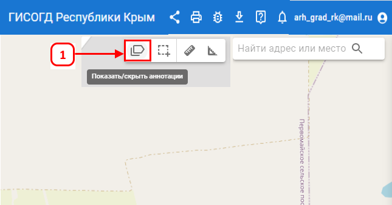
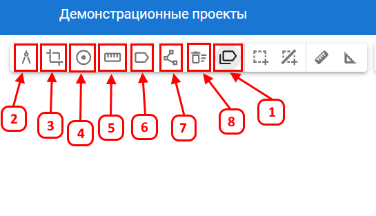

Аннотация — это функция, которая позволяет добавлять текстовую информацию или пометки на карте.
Функция используется для обозначения важных точек или объектов на карте, а также для пояснений к ним.
Для работы с аннотацией выполните следующие действия: на верхней панели инструментов нажмите на кнопку Показать/скрыть аннотации (1).

После включения аннотаций откроется список функций:

- Отобразить площадь объекта (2) — подписывает площадь для выбранного объекта.
- Отобразить периметр объекта (3) — подписывает для выбранного объекта общую длину контура.
- Подписать поворотные точки (4) — нумерует поворотные точки для выделенного объекта на карте.
- Подписать промеры (5) — добавляет измерения между поворотными точками на карте у выделенного объекта.
- Добавить аннотацию (6) — позволяет написать текст на карте в указанном месте.
- Вспомогательная линия (7) — позволяет нарисовать вспомогательные линии, чтобы обозначить связь с другими объектами на карте.
- Удалить все аннотации (8) — удаляет все созданные аннотации с карты.
Аннотации видны только на устройстве и учетной записи, под которыми они были созданы, и могут использоваться для печати фрагментов карты.